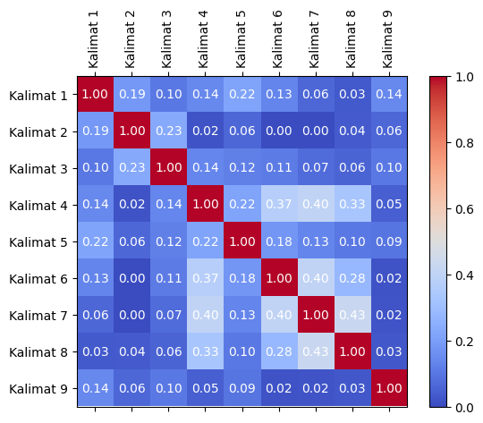
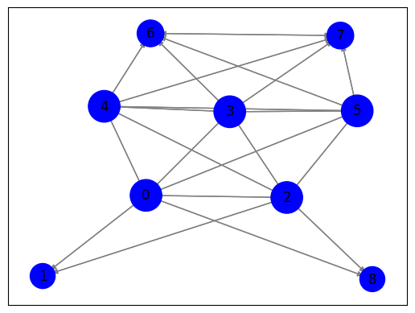

Membuat Graph & Ranking Kalimat#
Crawling Berita Online dan Tokenisasi#
import nltk
nltk.download('stopwords')
[nltk_data] Downloading package stopwords to /root/nltk_data...
[nltk_data] Unzipping corpora/stopwords.zip.
True
import requests
from bs4 import BeautifulSoup
import nltk
from nltk.corpus import stopwords
# Unduh konten halaman web berita
url = "https://www.antaranews.com/berita/3821805/bmkg-prediksi-hujan-disertai-kilat-terjadi-di-jakarta-selatan?utm_source=antaranews&utm_medium=desktop&utm_campaign=terkini"
response = requests.get(url)
html = response.text
# Parsing halaman web menggunakan BeautifulSoup
soup = BeautifulSoup(html, 'html.parser')
# Ekstraksi teks dari elemen-elemen yang berisi berita
article = soup.find('div', class_="post-content clearfix") # Sesuaikan dengan struktur HTML halaman web berita
article_text = article.get_text()
# Preprocessing
# Lowercasing
article_text = article_text.lower()
# Cleaning
article_text = ''.join(e for e in article_text if (e.isalnum() or e.isspace() or e == '.'))
# Hapus Angka
article_text = ''.join([char for char in article_text if not char.isdigit()])
# Tokenisasi teks menjadi kalimat menggunakan nltk
nltk.download('punkt')
sentences = nltk.sent_tokenize(article_text)
# Tokenisasi setiap kalimat menjadi kata-kata
words = [nltk.word_tokenize(sentence) for sentence in sentences]
# Stopword Removal
stop_words = set(stopwords.words('indonesian'))
filtered_sentences = []
for sentence in words:
filtered_sentence = [word for word in sentence if word.lower() not in stop_words]
filtered_sentences.append(filtered_sentence)
# Cetak kalimat-kalimat yang telah diproses
for filtered_sentence in filtered_sentences:
print(filtered_sentence)
# Tutup respons setelah digunakan
response.close()
[nltk_data] Downloading package punkt to /root/nltk_data...
[nltk_data] Unzipping tokenizers/punkt.zip.
['jakarta', 'badan', 'meteorologi', 'klimatologi', 'geofisika', 'bmkg', 'ri', 'mengeluarkan', 'peringatan', 'potensi', 'hujan', 'disertai', 'kilat', 'angin', 'kencang', 'wilayah', 'kota', 'administrasi', 'jakarta', 'selatan', 'selasa', 'november', '.']
['mengutip', 'laporan', 'bmkg', 'melansir', 'laman', 'resminya', 'selasa', 'kondisi', 'cuaca', 'bersahabat', 'selasa', 'sore', 'menjelang', 'malam', '.']
['berdasarkan', 'kalkulasi', 'bmkg', 'laporannya', 'kondisi', 'cuaca', 'jakarta', 'selatan', 'diawali', 'cerah', 'berawan', 'pagi', 'berangsur', 'hujan', 'ringan', 'siang', 'malam', '.']
['bmkg', 'suhu', 'jakarta', 'selatan', 'berkisar', 'derajat', 'celcius', 'tingkat', 'kelembapan', 'kisaran', 'terendah', 'persen', 'tertinggi', 'persen', '.']
['tingkat', 'suhu', 'kelembapan', 'tercatat', 'wilayah', 'jakarta', 'timur', '.']
['suhu', 'kawasan', 'jakarta', 'utara', 'jakarta', 'pusat', 'diprediksi', 'rentang', 'derajat', 'kelembapan', 'udara', 'persen', '.']
['suhu', 'jakarta', 'barat', 'derajat', 'celcius', 'kelembapan', 'udara', 'persen', '.']
['kabupaten', 'kepulauan', 'seribu', 'mengalami', 'rentang', 'suhu', 'derajat', 'celcius', 'kelembapan', 'udara', 'persen', 'bmkg', '.']
['baca', 'bmkg', 'prakirakan', 'hujan', 'guyur', 'kota', 'indonesia', 'baca', 'selasa', 'bmkg', 'prediksi', 'hujan', 'ringan', 'selimuti', 'kotapewarta', 'roy', 'rosa', 'bachtiareditor', 'teguh', 'handoko', 'copyright']
TF-IDF#
from sklearn.feature_extraction.text import TfidfVectorizer
# Inisialisasi penghitung TF-IDF
tfidf_vectorizer = TfidfVectorizer()
# Hitung TF-IDF
tfidf_matrix = tfidf_vectorizer.fit_transform(sentences)
# Daftar kata kunci
feature_names = tfidf_vectorizer.get_feature_names_out()
# Konversi matriks TF-IDF menjadi bentuk yang lebih mudah dibaca
tfidf_values = tfidf_matrix.toarray()
# Cetak TF-IDF untuk setiap kata dalam setiap kalimat
for i, sentence in enumerate(sentences):
print(f"Kalimat {i + 1}: {sentence}")
for j, word in enumerate(feature_names):
tfidf_value = tfidf_values[i][j]
if tfidf_value > 0:
print(f"{word}: {tfidf_value:.4f}")
print()
Kalimat 1:
jakarta antara badan meteorologi klimatologi dan geofisika bmkg ri mengeluarkan peringatan dini potensi hujan yang disertai kilat dan angin kencang yang akan terjadi di wilayah kota administrasi jakarta selatan selasa november .
administrasi: 0.1962
akan: 0.1136
angin: 0.1962
antara: 0.1658
badan: 0.1962
bmkg: 0.1020
dan: 0.2547
di: 0.1020
dini: 0.1962
disertai: 0.1962
geofisika: 0.1962
hujan: 0.1441
jakarta: 0.2041
kencang: 0.1962
kilat: 0.1962
klimatologi: 0.1962
kota: 0.1658
mengeluarkan: 0.1962
meteorologi: 0.1962
november: 0.1962
peringatan: 0.1962
potensi: 0.1962
ri: 0.1962
selasa: 0.1441
selatan: 0.1441
terjadi: 0.1658
wilayah: 0.1658
yang: 0.3315
Kalimat 2: mengutip laporan bmkg yang melansir melalui laman resminya selasa disebutkan bahwa kondisi cuaca yang kurang bersahabat tersebut akan berlangsung pada selasa sore hingga menjelang malam.
akan: 0.1215
bahwa: 0.2098
berlangsung: 0.2098
bersahabat: 0.2098
bmkg: 0.1091
cuaca: 0.1772
disebutkan: 0.2098
hingga: 0.1772
kondisi: 0.1772
kurang: 0.2098
laman: 0.2098
laporan: 0.2098
malam: 0.1772
melalui: 0.2098
melansir: 0.2098
mengutip: 0.2098
menjelang: 0.2098
pada: 0.1541
resminya: 0.2098
selasa: 0.3081
sore: 0.2098
tersebut: 0.1772
yang: 0.3544
Kalimat 3: namun berdasarkan kalkulasi bmkg dalam laporannya tersebut kondisi cuaca di jakarta selatan akan diawali dengan cerah berawan pada pagi lalu berangsur menjadi hujan ringan pada siang hingga malam hari.
akan: 0.1220
berangsur: 0.2106
berawan: 0.2106
berdasarkan: 0.2106
bmkg: 0.1095
cerah: 0.2106
cuaca: 0.1779
dalam: 0.1547
dengan: 0.1220
di: 0.1095
diawali: 0.2106
hari: 0.2106
hingga: 0.1779
hujan: 0.1547
jakarta: 0.1095
kalkulasi: 0.2106
kondisi: 0.1779
lalu: 0.2106
laporannya: 0.2106
malam: 0.1779
menjadi: 0.2106
namun: 0.2106
pada: 0.3094
pagi: 0.2106
ringan: 0.1779
selatan: 0.1547
siang: 0.2106
tersebut: 0.1779
Kalimat 4: bmkg menyebutkan suhu di jakarta selatan berkisar derajat celcius dengan tingkat kelembapan dalam kisaran terendah persen dan tertinggi persen.
berkisar: 0.2963
bmkg: 0.1541
celcius: 0.2176
dalam: 0.2176
dan: 0.1923
dengan: 0.1716
derajat: 0.1923
di: 0.1541
jakarta: 0.1541
kelembapan: 0.1716
kisaran: 0.2963
menyebutkan: 0.2503
persen: 0.3846
selatan: 0.2176
suhu: 0.1716
terendah: 0.2963
tertinggi: 0.2963
tingkat: 0.2503
Kalimat 5: tingkat suhu dan kelembapan serupa juga tercatat akan terjadi pada wilayah jakarta timur.
akan: 0.2036
dan: 0.2281
jakarta: 0.1828
juga: 0.2970
kelembapan: 0.2036
pada: 0.2582
serupa: 0.3516
suhu: 0.2036
tercatat: 0.3516
terjadi: 0.2970
timur: 0.3516
tingkat: 0.2970
wilayah: 0.2970
Kalimat 6: untuk suhu di kawasan jakarta utara dan jakarta pusat diprediksi dalam rentang derajat dengan kelembapan udara persen.
dalam: 0.2276
dan: 0.2011
dengan: 0.1794
derajat: 0.2011
di: 0.1611
diprediksi: 0.3099
jakarta: 0.3222
kawasan: 0.3099
kelembapan: 0.1794
persen: 0.2011
pusat: 0.3099
rentang: 0.2618
suhu: 0.1794
udara: 0.2276
untuk: 0.3099
utara: 0.3099
Kalimat 7: selanjutnya suhu di jakarta barat sekitar derajat celcius dengan kelembapan udara persen.
barat: 0.4022
celcius: 0.2954
dengan: 0.2329
derajat: 0.2610
di: 0.2091
jakarta: 0.2091
kelembapan: 0.2329
persen: 0.2610
sekitar: 0.3397
selanjutnya: 0.4022
suhu: 0.2329
udara: 0.2954
Kalimat 8: sedangkan kabupaten kepulauan seribu akan mengalami rentang suhu sekitar derajat celcius dengan kelembapan udara persen demikian bmkg menyebutkan.
akan: 0.1695
bmkg: 0.1522
celcius: 0.2150
demikian: 0.2927
dengan: 0.1695
derajat: 0.1899
kabupaten: 0.2927
kelembapan: 0.1695
kepulauan: 0.2927
mengalami: 0.2927
menyebutkan: 0.2472
persen: 0.1899
rentang: 0.2472
sedangkan: 0.2927
sekitar: 0.2472
seribu: 0.2927
suhu: 0.1695
udara: 0.2150
Kalimat 9: baca juga bmkg prakirakan hujan guyur sebagian kota besar di indonesia
baca juga selasa bmkg prediksi hujan ringan selimuti sejumlah kotapewarta roy rosa bachtiareditor teguh handoko copyright antara
antara: 0.1595
baca: 0.3777
bachtiareditor: 0.1888
besar: 0.1888
bmkg: 0.1964
copyright: 0.1888
di: 0.0982
guyur: 0.1888
handoko: 0.1888
hujan: 0.2774
indonesia: 0.1888
juga: 0.3190
kota: 0.1595
kotapewarta: 0.1888
prakirakan: 0.1888
prediksi: 0.1888
ringan: 0.1595
rosa: 0.1888
roy: 0.1888
sebagian: 0.1888
sejumlah: 0.1888
selasa: 0.1387
selimuti: 0.1888
teguh: 0.1888
Cosine Similarity antar Kalimat#
from sklearn.metrics.pairwise import cosine_similarity
from sklearn.feature_extraction.text import TfidfVectorizer
# Indeks kalimat yang akan dibandingkan
sentence1_index = 0
sentence2_index = 1
# Ambil vektor TF-IDF untuk kedua kalimat
tfidf_vector1 = tfidf_matrix[sentence1_index]
tfidf_vector2 = tfidf_matrix[sentence2_index]
# Hitung cosine similarity antara kedua vektor
similarity = cosine_similarity(tfidf_vector1, tfidf_vector2)
# Cetak hasil cosine similarity
print(f"Cosine Similarity antara Kalimat {sentence1_index + 1} dan Kalimat {sentence2_index + 1}: {similarity[0][0]:.4f}")
Cosine Similarity antara Kalimat 1 dan Kalimat 2: 0.1868
# Matriks TF-IDF telah dihitung sebelumnya (tfidf_matrix)
# Hitung cosine similarity antara semua pasangan kalimat
similarity_matrix = cosine_similarity(tfidf_matrix, tfidf_matrix)
# Cetak hasil similarity_matrix
num_sentences = len(sentences) # Jumlah kalimat
for i in range(num_sentences):
for j in range(i+1, num_sentences):
similarity = similarity_matrix[i][j]
print(f"Cosine Similarity antara Kalimat {i + 1} dan Kalimat {j + 1}: {similarity:.4f}")
Cosine Similarity antara Kalimat 1 dan Kalimat 2: 0.1868
Cosine Similarity antara Kalimat 1 dan Kalimat 3: 0.1031
Cosine Similarity antara Kalimat 1 dan Kalimat 4: 0.1432
Cosine Similarity antara Kalimat 1 dan Kalimat 5: 0.2170
Cosine Similarity antara Kalimat 1 dan Kalimat 6: 0.1334
Cosine Similarity antara Kalimat 1 dan Kalimat 7: 0.0640
Cosine Similarity antara Kalimat 1 dan Kalimat 8: 0.0348
Cosine Similarity antara Kalimat 1 dan Kalimat 9: 0.1429
Cosine Similarity antara Kalimat 2 dan Kalimat 3: 0.2320
Cosine Similarity antara Kalimat 2 dan Kalimat 4: 0.0168
Cosine Similarity antara Kalimat 2 dan Kalimat 5: 0.0645
Cosine Similarity antara Kalimat 2 dan Kalimat 6: 0.0000
Cosine Similarity antara Kalimat 2 dan Kalimat 7: 0.0000
Cosine Similarity antara Kalimat 2 dan Kalimat 8: 0.0372
Cosine Similarity antara Kalimat 2 dan Kalimat 9: 0.0641
Cosine Similarity antara Kalimat 3 dan Kalimat 4: 0.1389
Cosine Similarity antara Kalimat 3 dan Kalimat 5: 0.1247
Cosine Similarity antara Kalimat 3 dan Kalimat 6: 0.1100
Cosine Similarity antara Kalimat 3 dan Kalimat 7: 0.0742
Cosine Similarity antara Kalimat 3 dan Kalimat 8: 0.0580
Cosine Similarity antara Kalimat 3 dan Kalimat 9: 0.1035
Cosine Similarity antara Kalimat 4 dan Kalimat 5: 0.2162
Cosine Similarity antara Kalimat 4 dan Kalimat 6: 0.3710
Cosine Similarity antara Kalimat 4 dan Kalimat 7: 0.3992
Cosine Similarity antara Kalimat 4 dan Kalimat 8: 0.3289
Cosine Similarity antara Kalimat 4 dan Kalimat 9: 0.0454
Cosine Similarity antara Kalimat 5 dan Kalimat 6: 0.1778
Cosine Similarity antara Kalimat 5 dan Kalimat 7: 0.1330
Cosine Similarity antara Kalimat 5 dan Kalimat 8: 0.1035
Cosine Similarity antara Kalimat 5 dan Kalimat 9: 0.0947
Cosine Similarity antara Kalimat 6 dan Kalimat 7: 0.3986
Cosine Similarity antara Kalimat 6 dan Kalimat 8: 0.2812
Cosine Similarity antara Kalimat 6 dan Kalimat 9: 0.0158
Cosine Similarity antara Kalimat 7 dan Kalimat 8: 0.4285
Cosine Similarity antara Kalimat 7 dan Kalimat 9: 0.0205
Cosine Similarity antara Kalimat 8 dan Kalimat 9: 0.0299
import pandas as pd
# Matriks TF-IDF telah dihitung sebelumnya (tfidf_matrix)
# Hitung cosine similarity antara semua pasangan kalimat
similarity_matrix = cosine_similarity(tfidf_matrix, tfidf_matrix)
# Nama kolom dan indeks untuk DataFrame
sentence_indices = [f"Kalimat {i + 1}" for i in range(len(sentences))]
# Buat DataFrame dari hasil cosine similarity
df = pd.DataFrame(similarity_matrix, columns=sentence_indices, index=sentence_indices)
# Cetak DataFrame
df
| Kalimat 1 | Kalimat 2 | Kalimat 3 | Kalimat 4 | Kalimat 5 | Kalimat 6 | Kalimat 7 | Kalimat 8 | Kalimat 9 | |
|---|---|---|---|---|---|---|---|---|---|
| Kalimat 1 | 1.000000 | 0.186810 | 0.103141 | 0.143210 | 0.216968 | 0.133406 | 0.064014 | 0.034783 | 0.142884 |
| Kalimat 2 | 0.186810 | 1.000000 | 0.232044 | 0.016804 | 0.064502 | 0.000000 | 0.000000 | 0.037182 | 0.064147 |
| Kalimat 3 | 0.103141 | 0.232044 | 1.000000 | 0.138875 | 0.124727 | 0.110026 | 0.074212 | 0.058004 | 0.103540 |
| Kalimat 4 | 0.143210 | 0.016804 | 0.138875 | 1.000000 | 0.216207 | 0.371016 | 0.399164 | 0.328890 | 0.045380 |
| Kalimat 5 | 0.216968 | 0.064502 | 0.124727 | 0.216207 | 1.000000 | 0.177828 | 0.133047 | 0.103494 | 0.094728 |
| Kalimat 6 | 0.133406 | 0.000000 | 0.110026 | 0.371016 | 0.177828 | 1.000000 | 0.398650 | 0.281236 | 0.015819 |
| Kalimat 7 | 0.064014 | 0.000000 | 0.074212 | 0.399164 | 0.133047 | 0.398650 | 1.000000 | 0.428535 | 0.020533 |
| Kalimat 8 | 0.034783 | 0.037182 | 0.058004 | 0.328890 | 0.103494 | 0.281236 | 0.428535 | 1.000000 | 0.029882 |
| Kalimat 9 | 0.142884 | 0.064147 | 0.103540 | 0.045380 | 0.094728 | 0.015819 | 0.020533 | 0.029882 | 1.000000 |
Matriks Cosine Similarity#
import pandas as pd
import numpy as np
import matplotlib.pyplot as plt
# Matriks TF-IDF telah dihitung sebelumnya (tfidf_matrix)
# Hitung cosine similarity antara semua pasangan kalimat
similarity_matrix = cosine_similarity(tfidf_matrix, tfidf_matrix)
# Nama kolom dan indeks untuk DataFrame
sentence_indices = [f"Kalimat {i + 1}" for i in range(len(sentences))]
# Buat DataFrame dari hasil cosine similarity
df = pd.DataFrame(similarity_matrix, columns=sentence_indices, index=sentence_indices)
# Membuat grafik matriks
fig, ax = plt.subplots()
cax = ax.matshow(df, cmap='coolwarm')
fig.colorbar(cax)
# Memberi label pada sumbu X dan Y
ax.set_xticks(np.arange(len(df.columns)))
ax.set_yticks(np.arange(len(df.index)))
ax.set_xticklabels(df.columns, rotation=90)
ax.set_yticklabels(df.index)
# Menampilkan nilai similarity pada matriks
for i in range(len(df.index)):
for j in range(len(df.columns)):
text = ax.text(j, i, f'{df.iat[i, j]:.2f}', ha='center', va='center', color='w')
plt.show()

Menghitung Closeness Centrality#
import networkx as nx
# Buat grafik dari matriks similarity
G = nx.Graph()
# Tambahkan simpul (node) ke grafik yang mewakili setiap kalimat
for sentence in sentences:
G.add_node(sentence)
# Tambahkan tepi (edge) antara kalimat berdasarkan similarity
for i in range(len(sentences)):
for j in range(i + 1, len(sentences)):
similarity = df.iloc[i, j] # Mengambil similarity dari DataFrame
if similarity > 0:
G.add_edge(sentences[i], sentences[j], weight=similarity)
# Hitung closeness centrality untuk setiap simpul
closeness_centrality = nx.closeness_centrality(G, distance='weight')
# Cetak closeness centrality
for sentence, centrality in closeness_centrality.items():
print(f"Closeness Centrality of {sentence}: {centrality:.4f}")
Closeness Centrality of
jakarta antara badan meteorologi klimatologi dan geofisika bmkg ri mengeluarkan peringatan dini potensi hujan yang disertai kilat dan angin kencang yang akan terjadi di wilayah kota administrasi jakarta selatan selasa november .: 12.6196
Closeness Centrality of mengutip laporan bmkg yang melansir melalui laman resminya selasa disebutkan bahwa kondisi cuaca yang kurang bersahabat tersebut akan berlangsung pada selasa sore hingga menjelang malam.: 15.7311
Closeness Centrality of namun berdasarkan kalkulasi bmkg dalam laporannya tersebut kondisi cuaca di jakarta selatan akan diawali dengan cerah berawan pada pagi lalu berangsur menjadi hujan ringan pada siang hingga malam hari.: 10.6880
Closeness Centrality of bmkg menyebutkan suhu di jakarta selatan berkisar derajat celcius dengan tingkat kelembapan dalam kisaran terendah persen dan tertinggi persen.: 15.2279
Closeness Centrality of tingkat suhu dan kelembapan serupa juga tercatat akan terjadi pada wilayah jakarta timur.: 9.6476
Closeness Centrality of untuk suhu di kawasan jakarta utara dan jakarta pusat diprediksi dalam rentang derajat dengan kelembapan udara persen.: 15.0429
Closeness Centrality of selanjutnya suhu di jakarta barat sekitar derajat celcius dengan kelembapan udara persen.: 15.7042
Closeness Centrality of sedangkan kabupaten kepulauan seribu akan mengalami rentang suhu sekitar derajat celcius dengan kelembapan udara persen demikian bmkg menyebutkan.: 19.4345
Closeness Centrality of baca juga bmkg prakirakan hujan guyur sebagian kota besar di indonesia
baca juga selasa bmkg prediksi hujan ringan selimuti sejumlah kotapewarta roy rosa bachtiareditor teguh handoko copyright antara: 18.9988
Membuat Graph#
import networkx as nx
# Matriks TF-IDF telah dihitung sebelumnya (tfidf_matrix)
# Hitung cosine similarity antara semua pasangan kalimat
similarity_matrix = cosine_similarity(tfidf_matrix, tfidf_matrix)
# Buat grafik berarah (DiGraph) berdasarkan similarity_matrix
G = nx.DiGraph()
for i in range(len(similarity_matrix)):
G.add_node(i) # Tambahkan node dengan indeks numerik
for i in range(len(similarity_matrix)):
for j in range(len(similarity_matrix)):
similarity = similarity_matrix[i][j]
if similarity > 0.1 and i != j: # Pastikan node tidak menghubungkan dirinya sendiri
G.add_edge(i, j)
# Hitung closeness centrality
closeness_centrality = nx.closeness_centrality(G)
# Visualisasi closeness centrality
pos = nx.spring_layout(G) # Atur layout grafik
node_size = [v * 1000 for v in closeness_centrality.values()] # Ubah ukuran node berdasarkan closeness centrality, dengan faktor pengurangan ukuran
nx.draw_networkx_nodes(G, pos, node_size=node_size, node_color='b')
nx.draw_networkx_edges(G, pos, edge_color='gray', arrows=True)
nx.draw_networkx_labels(G, pos)
plt.show()
# Cetak closeness centrality
print("Closeness Centrality:")
for node, closeness in closeness_centrality.items():
print(f"Node {node}: {closeness:.4f}")

Closeness Centrality:
Node 0: 0.8000
Node 1: 0.5000
Node 2: 0.8000
Node 3: 0.8000
Node 4: 0.8000
Node 5: 0.8000
Node 6: 0.5714
Node 7: 0.5714
Node 8: 0.5000
Ranking Kalimat Berdasarkan Closeness Centrality#
import networkx as nx
import numpy as np
# Fungsi untuk mendapatkan indeks kalimat dengan closeness centrality terbesar
def get_top_sentences(closeness_centrality):
sorted_indices = np.argsort(list(closeness_centrality.values()))[::-1]
return sorted_indices
# Hitung cosine similarity antara semua pasangan kalimat
similarity_matrix = cosine_similarity(tfidf_matrix, tfidf_matrix)
# Buat grafik berarah (DiGraph) berdasarkan similarity_matrix
G = nx.DiGraph()
for i in range(len(similarity_matrix)):
G.add_node(i) # Tambahkan node dengan indeks numerik
for i in range(len(similarity_matrix)):
for j in range(len(similarity_matrix)):
similarity = similarity_matrix[i][j]
if similarity > 0.1 and i != j:
G.add_edge(i, j)
# Hitung closeness centrality
closeness_centrality = nx.closeness_centrality(G)
# Mendapatkan indeks kalimat dengan closeness centrality terbesar
top_sentences_indices = get_top_sentences(closeness_centrality)
# Tampilkan nilai closeness centrality
num_top_sentences = 3
for i in range(num_top_sentences):
top_sentence_index = top_sentences_indices[i]
closeness_value = closeness_centrality[top_sentence_index]
top_sentence = sentences[top_sentence_index]
print(f"Ranking {i + 1}: Kalimat {top_sentence_index + 1} - {top_sentence}")
print(f" Closeness Centrality: {closeness_value:.4f}\n")
Ranking 1: Kalimat 6 - untuk suhu di kawasan jakarta utara dan jakarta pusat diprediksi dalam rentang derajat dengan kelembapan udara persen.
Closeness Centrality: 0.8000
Ranking 2: Kalimat 5 - tingkat suhu dan kelembapan serupa juga tercatat akan terjadi pada wilayah jakarta timur.
Closeness Centrality: 0.8000
Ranking 3: Kalimat 4 - bmkg menyebutkan suhu di jakarta selatan berkisar derajat celcius dengan tingkat kelembapan dalam kisaran terendah persen dan tertinggi persen.
Closeness Centrality: 0.8000
Ranking Kalimat Berdasarkan Pagerank#
import networkx as nx
import numpy as np
# Fungsi untuk mendapatkan indeks kalimat dengan nilai tertinggi dari suatu metrik
def get_top_sentences(metric_values):
sorted_indices = np.argsort(metric_values)[::-1]
return sorted_indices
# Hitung cosine similarity antara semua pasangan kalimat
similarity_matrix = cosine_similarity(tfidf_matrix, tfidf_matrix)
# Buat grafik berarah (DiGraph) berdasarkan similarity_matrix
G = nx.DiGraph()
for i in range(len(similarity_matrix)):
G.add_node(i) # Tambahkan node dengan indeks numerik
for i in range(len(similarity_matrix)):
for j in range(len(similarity_matrix)):
similarity = similarity_matrix[i][j]
if similarity > 0.1 and i != j:
G.add_edge(i, j)
# Hitung PageRank
pagerank = nx.pagerank(G)
# Mendapatkan indeks kalimat dengan nilai tertinggi dari PageRank
top_sentences_pagerank = get_top_sentences(list(pagerank.values()))
# Tampilkan nilai PageRank
num_top_sentences = 3
for i in range(num_top_sentences):
top_sentence_index = top_sentences_pagerank[i]
pagerank_value = pagerank[top_sentence_index]
top_sentence = sentences[top_sentence_index]
print(f"Ranking {i + 1}: Kalimat {top_sentence_index + 1} - {top_sentence}")
print(f" PageRank Value: {pagerank_value:.4f}\n")
Ranking 1: Kalimat 3 - namun berdasarkan kalkulasi bmkg dalam laporannya tersebut kondisi cuaca di jakarta selatan akan diawali dengan cerah berawan pada pagi lalu berangsur menjadi hujan ringan pada siang hingga malam hari.
PageRank Value: 0.1437
Ranking 2: Kalimat 1 -
jakarta antara badan meteorologi klimatologi dan geofisika bmkg ri mengeluarkan peringatan dini potensi hujan yang disertai kilat dan angin kencang yang akan terjadi di wilayah kota administrasi jakarta selatan selasa november .
PageRank Value: 0.1437
Ranking 3: Kalimat 6 - untuk suhu di kawasan jakarta utara dan jakarta pusat diprediksi dalam rentang derajat dengan kelembapan udara persen.
PageRank Value: 0.1362
Ranking Kalimat Berdasarkan Eigen Vector Centrality#
import networkx as nx
import numpy as np
# Fungsi untuk mendapatkan indeks kalimat dengan nilai tertinggi dari suatu metrik
def get_top_sentences(metric_values):
sorted_indices = np.argsort(metric_values)[::-1]
return sorted_indices
# Hitung cosine similarity antara semua pasangan kalimat
similarity_matrix = cosine_similarity(tfidf_matrix, tfidf_matrix)
# Buat grafik berarah (DiGraph) berdasarkan similarity_matrix
G = nx.DiGraph()
for i in range(len(similarity_matrix)):
G.add_node(i) # Tambahkan node dengan indeks numerik
for i in range(len(similarity_matrix)):
for j in range(len(similarity_matrix)):
similarity = similarity_matrix[i][j]
if similarity > 0.1 and i != j:
G.add_edge(i, j)
# Hitung Eigenvector Centrality
eigenvector_centrality = nx.eigenvector_centrality_numpy(G)
# Mendapatkan indeks kalimat dengan nilai tertinggi dari Eigenvector Centrality
top_sentences_eigenvector = get_top_sentences(list(eigenvector_centrality.values()))
# Tampilkan kalimat dengan Eigenvector Centrality terbesar
num_top_sentences = 3
# Tampilkan nilai Eigenvector Centrality
for i in range(num_top_sentences):
top_sentence_index = top_sentences_eigenvector[i]
eigenvector_value = eigenvector_centrality[top_sentence_index]
top_sentence = sentences[top_sentence_index]
print(f"Ranking {i + 1}: Kalimat {top_sentence_index + 1} - {top_sentence}")
print(f" Eigenvector Centrality: {eigenvector_value:.4f}\n")
Ranking 1: Kalimat 6 - untuk suhu di kawasan jakarta utara dan jakarta pusat diprediksi dalam rentang derajat dengan kelembapan udara persen.
Eigenvector Centrality: 0.4154
Ranking 2: Kalimat 4 - bmkg menyebutkan suhu di jakarta selatan berkisar derajat celcius dengan tingkat kelembapan dalam kisaran terendah persen dan tertinggi persen.
Eigenvector Centrality: 0.4154
Ranking 3: Kalimat 5 - tingkat suhu dan kelembapan serupa juga tercatat akan terjadi pada wilayah jakarta timur.
Eigenvector Centrality: 0.4154